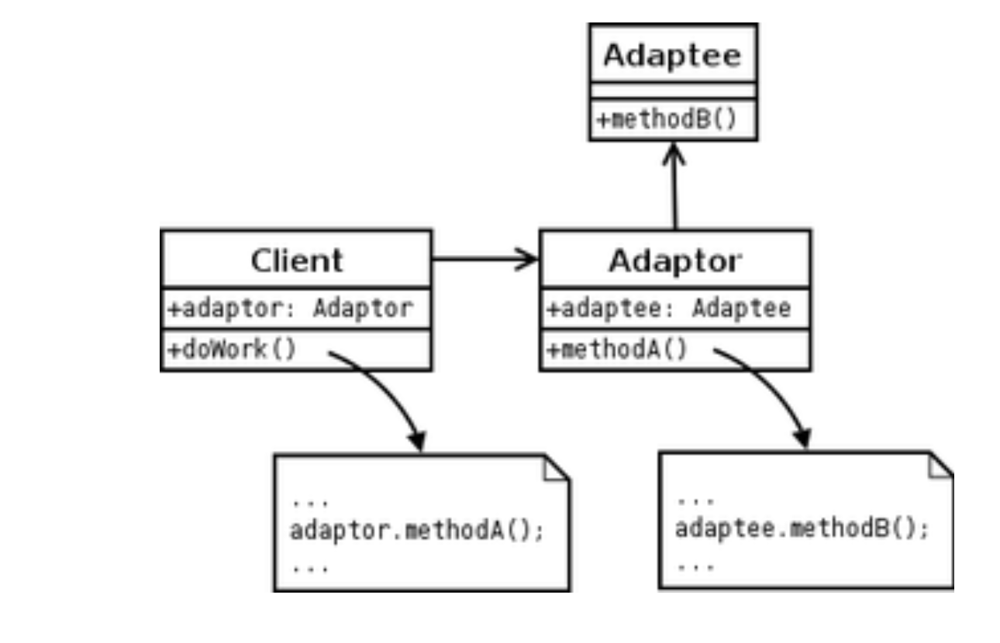

🎯 Exercice : Bateaux de Guerre
📋 Description
Un système de bateaux de guerre où un Captain commande un bateau qui peut être un FishingBoat adapté en BattleShip. La distance peut être en KM ou en Miles.
Patterns identifiés : Adapter, Decorator, Strategy
🔌 PATTERN 1 : ADAPTER
📊 Diagramme UML Théorique

🎯 Dans l'exercice
BattleFishingBoat adapte FishingBoat pour l'interface BattleShip
💻 Code de l'Adapter
// Target (interface attendue)
public interface BattleShip {
void fire();
void move(Distance distance);
}
// Adaptee (classe incompatible)
public class FishingBoat {
public void sail(Distance distance) { } // ← Méthode différente
public void fish() { } // ← Méthode différente
}
// ADAPTER - Fait le pont
public class BattleFishingBoat implements BattleShip {
private FishingBoat boat; // ← Contient Adaptee
@Override
public void fire() {
boat.fish(); // ← fire() → fish() (NOMS DIFFÉRENTS)
}
@Override
public void move(Distance distance) {
boat.sail(distance); // ← move() → sail() (NOMS DIFFÉRENTS)
}
}
📊 Tableaux de correspondance
Tableau 1 : Participants
| Participants théoriques |
Noms dans le code |
| Client |
App (main) |
| Target |
BattleShip |
| Adapter |
BattleFishingBoat |
| Adaptee |
FishingBoat |
Tableau 2 : Méthodes
| Méthodes théoriques |
Méthodes dans le code |
| doWork() (Client) |
captain.fire(), captain.move() |
| methodA() (Adapter) |
fire(), move() |
| methodB() (Adaptee) |
fish(), sail() |
🔍 Indices pour reconnaître Adapter
- ✅ BattleFishingBoat implémente BattleShip (Target)
- ✅ Contient FishingBoat (Adaptee - type différent)
- ✅ Méthodes avec noms différents (fire→fish, move→sail)
- ✅ But : Rendre compatible
🎨 PATTERN 2 : DECORATOR
📊 Diagramme UML Théorique

🎯 Dans l'exercice
Captain décore un BattleShip en ajoutant "Captain's order : "
💻 Code du Decorator
// Component (interface)
public interface BattleShip {
void fire();
void move(Distance distance);
}
// ConcreteComponent
public class BattleFishingBoat implements BattleShip {
// ... implémentation de base
}
// DECORATOR
public class Captain implements BattleShip {
private BattleShip battleship; // ← Contient BattleShip (MÊME type)
public Captain(BattleShip battleship) {
this.battleship = battleship;
}
@Override
public void fire() {
System.out.print("Captain's order : "); // ← AJOUTE préfixe
battleship.fire(); // ← Délègue
}
@Override
public void move(Distance distance) {
System.out.print("Captain's order : "); // ← AJOUTE préfixe
battleship.move(distance); // ← Délègue
}
}
📊 Tableaux de correspondance
Tableau 1 : Participants
| Participants théoriques |
Noms dans le code |
| Component (interface) |
BattleShip |
| ConcreteComponent |
BattleFishingBoat |
| Decorator |
Captain |
Tableau 2 : Méthodes
| Méthodes théoriques |
Méthodes dans le code |
| operation() |
fire(), move() |
🔍 Indices pour reconnaître Decorator
- ✅ Captain implémente BattleShip ET contient BattleShip (même type)
- ✅ Ajoute "Captain's order : " avant chaque action
- ✅ Délègue à battleship.fire()
- ✅ But : Ajouter fonctionnalité
🎯 PATTERN 3 : STRATEGY
📊 Diagramme UML Théorique

🎯 Dans l'exercice
Distance est une stratégie qui peut être en KM ou en Miles
💻 Code de la Strategy
// Strategy (interface)
public interface Distance {
String getDistance();
}
// ConcreteStrategy A
public class DistanceKM implements Distance {
private int km;
public DistanceKM(int km) {
this.km = km;
}
@Override
public String getDistance() {
return km + " kms";
}
}
// ConcreteStrategy B
public class DistanceMiles implements Distance {
private int miles;
public DistanceMiles(int miles) {
this.miles = miles;
}
@Override
public String getDistance() {
return miles + " miles";
}
}
// Context (utilise la stratégie)
public void move(Distance distance) {
System.out.println("Moving " + distance.getDistance());
}
📊 Tableaux de correspondance
Tableau 1 : Participants
| Participants théoriques |
Noms dans le code |
| Strategy (interface) |
Distance |
| ConcreteStrategyA |
DistanceKM |
| ConcreteStrategyB |
DistanceMiles |
| Context |
BattleShip (méthode move) |
Tableau 2 : Méthodes
| Méthodes théoriques |
Méthodes dans le code |
| execute() / algorithm() |
getDistance() |
🔍 Indices pour reconnaître Strategy
- ✅ Distance est une interface avec UNE méthode (getDistance)
- ✅ Plusieurs ConcreteStrategy (DistanceKM, DistanceMiles)
- ✅ Passée en paramètre : move(Distance distance)
- ✅ But : Changer d'algorithme (KM ou Miles)
🔄 Flow complet d'exécution
Code Main
Captain captain = new Captain(new BattleFishingBoat());
captain.move(new DistanceKM(500));
captain.fire();
Exécution détaillée
1. new BattleFishingBoat() créé (ADAPTER)
FishingBoat → BattleShip
2. new Captain(battleship) créé (DECORATOR)
Enveloppe BattleFishingBoat
3. captain.move(new DistanceKM(500)) appelé (STRATEGY)
↓
Captain.move()
→ Print "Captain's order : " (DECORATOR)
→ battleship.move(distance)
↓
BattleFishingBoat.move() (ADAPTER)
→ boat.sail(distance)
↓
FishingBoat.sail()
→ Print "The Boat is moving 500 kms" (STRATEGY)
4. captain.fire() appelé
↓
Captain.fire()
→ Print "Captain's order : " (DECORATOR)
→ battleship.fire()
↓
BattleFishingBoat.fire() (ADAPTER)
→ boat.fish()
↓
FishingBoat.fish()
→ Print "fishing ..."
Output
Captain's order : The Boat is moving 500 kms
Captain's order : fishing ...
🆚 Comparaison des 3 patterns
| Aspect |
ADAPTER |
DECORATOR |
STRATEGY |
| But |
Compatibilité |
Ajouter fonctionnalité |
Changer algorithme |
| Contient |
Type différent |
Même type |
- |
| Méthodes |
Noms différents |
Mêmes noms |
UNE méthode |
| Exemple |
fire() → fish() |
Ajoute "Captain's order" |
KM ou Miles |
💡 Points clés
ADAPTER (BattleFishingBoat)
- Rend FishingBoat compatible avec BattleShip
- Traduit fire()→fish() et move()→sail()
- Type contenu différent
DECORATOR (Captain)
- Ajoute "Captain's order : " avant chaque action
- Enveloppe un BattleShip
- Type contenu identique
STRATEGY (Distance)
- Permet de choisir entre KM et Miles
- UNE méthode : getDistance()
- Passée en paramètre